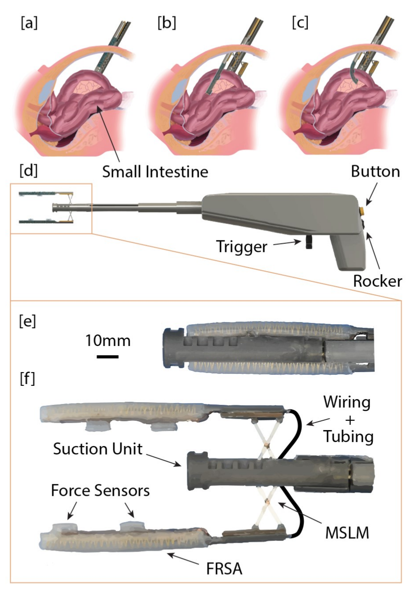

01 / System
System Overview
The grasper passes through an 18-mm trocar in its closed configuration, then expands inside the working cavity. A distal suction unit establishes an initial localized hold. A miniature scissor lift adjusts two fiber-reinforced soft actuators, which inflate around the tissue while embedded magnetometric sensors estimate interaction forces. Figure 1 identifies the handle controls and closed and deployed end-effector configurations.

02 / Motivation
Research Motivation
Retraction creates space for a surgeon to see and access nearby anatomy, but conventional rigid graspers can concentrate load on delicate bowel tissue. Laparoscopic access also reduces direct tactile feedback. This work investigates a compliant grasper that distributes contact across larger soft surfaces while adding sensor-based estimates of the tissue–tool interaction forces.
The main design tradeoff is between a compact instrument that fits the access port and a wider grasping structure that can envelop an intestinal segment. Suction provides a temporary initial hold, allowing the pneumatic actuators to deploy around the selected tissue before taking over the grasp. This conference contribution evaluates the initial architecture and laboratory feasibility.
03 / Design
System Design
Suction and adjustable deployment
The distal suction unit, handle, and end-effector configurations are identified in Figure 1. Two linear motors independently adjust the horizontal position of the actuators and their separation through a miniature scissor-lift mechanism. A rocker switch and trigger control these motions; buttons control suction and inflation. The reported maximum actuator separation is 40 mm.
Compliant pneumatic actuators
Each fiber-reinforced soft actuator is 70 mm long, with an 8-mm-diameter semicircular cross-section. Dragon Skin 20 silicone, a muslin strain-limiting layer, and Kevlar fiber reinforcement bias deformation toward bending under pressure. The opposing actuators envelop the specimen rather than relying on a small rigid pinching contact; their closed and deployed geometry appears in Figure 1(e–f).
Magnetometric force sensing
Each actuator contains two soft sensors combining a triple-axis magnetometer with an embedded magnet in compliant silicone. An internal flexible printed circuit carries the sensor signals. A TensorFlow dense neural network with three hidden layers maps the coupled magnetic-field output to force estimates; the source evaluates normal and two shear directions against a NANO17 reference.
04 / Method
Methodology
The intended operating sequence separates access, tissue isolation, mechanical deployment, and the compliant grasp. Embedded sensing estimates contact forces during interaction; the paper does not demonstrate an autonomous closed-loop grasp controller or a completed clinical workflow.
-
Enter closed
Pass the compact end effector through the 18-mm trocar before expanding the instrument.
-
Engage suction
Apply vacuum at the distal suction unit to isolate and initially hold the selected intestinal segment.
-
Deploy and position
Use the scissor lift and handle controls to set actuator position and separation around the tissue.
-
Inflate and monitor
Pressurize the opposing soft actuators to envelop the segment and use calibrated sensor outputs to estimate interaction forces.
05 / Experiments
Experimental Setup
Actuator stroke was measured with an Aurora electromagnetic tracking system. Blocked-tip force was measured using a NANO17 six-axis force transducer. The same force reference and a U5e Universal Robot were used to collect sensor calibration data. The dense neural network used an 80% training and 20% validation split and was trained for 100 epochs.
Grasping feasibility was assessed using a weighted silicone tube and explanted porcine small intestine. The paper reports a 500-g hold at 250 kPa and an ex-vivo retraction demonstration. These experiments examine actuator capability, calibration accuracy, and grasping feasibility separately; they do not supply an in-vivo study or a clinical tissue-safety evaluation.
06 / Results
Evaluation & Results
The actuator stroke traces approximate a 22-mm bend radius, and blocked-tip measurements exceed 2.5 N. At 250 kPa, the assembled end effector holds a 500-g weighted silicone tube. A separate photograph shows retraction of explanted porcine small intestine. The force-calibration scatterplots compare the reference measurements with dense-network predictions in the normal and two shear directions.
- 500 g
- Weighted silicone tube held by the end effector at 250 kPa
- >2.5 N
- Actuator blocked-tip force in the reported pressure test
- 0.16 N
- Reported maximum calibration MAE; normal 0–10 N and shear 0–2 N ranges

These results support a preliminary instrument capable of bending, generating force, holding a weighted surrogate, and retracting ex-vivo bowel. The sensor validation concerns the reported calibration dataset and its train/validation split. It should not be read as the later journal article’s separate multi-trial sensor study, or as validation of force accuracy on every intestinal grasp.
07 / Discussion
Discussion & Limitations
The conference paper establishes the initial expandable grasper and its actuator, sensing, and grasping feasibility tests. Its printed future-work statement calls for abdominal-phantom testing and evaluation with simulated dilated intestines. The study does not report patient use, in-vivo experiments, a measured reduction in tissue injury, or passive anchoring of a detached end effector.
The expanded 2024 journal article develops the distinct MAIR system, adding detachable passive retraction and broader in-vitro and ex-vivo evaluation. Those later features and outcomes belong to the journal stage and are not attributed to this earlier conference prototype.
08 / Resources
Resources & Citation
L. Kinnicutt, J. Lee, J. Oden, L. T. Gaeta, S. K. Carroll, A. Rathi, Z. H. Lim, M. Lee, C. Orakwue, K. J. McDonald, D. Hess, and T. Ranzani. “A Soft Laparoscopic Grasper for Retraction of the Small Intestine.” The 15th Hamlyn Symposium on Medical Robotics, 2023, pp. 97–98. doi:10.31256/HSMR2023.51.
@inproceedings{kinnicutt2023soft,
author = {Kinnicutt, L. and Lee, J. and Oden, J. and Gaeta, L. T. and Carroll, S. K. and Rathi, A. and Lim, Z. H. and Lee, M. and Orakwue, C. and McDonald, K. J. and Hess, D. and Ranzani, T.},
title = {A Soft Laparoscopic Grasper for Retraction of the Small Intestine},
booktitle = {The 15th Hamlyn Symposium on Medical Robotics},
pages = {97--98},
year = {2023},
doi = {10.31256/HSMR2023.51}
}Read the supplied two-page paper or the official symposium proceedings. Figures 1–2 reproduce the complete source figure groups.